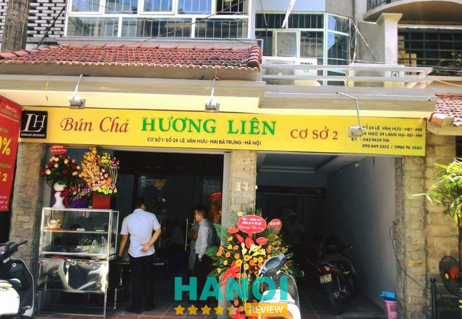
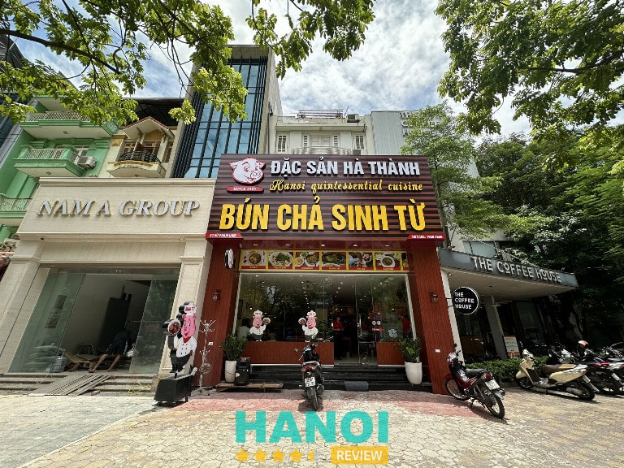
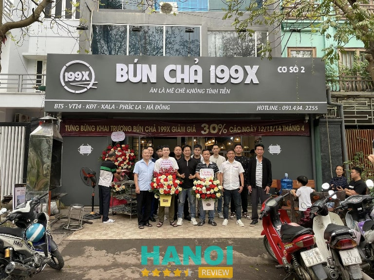
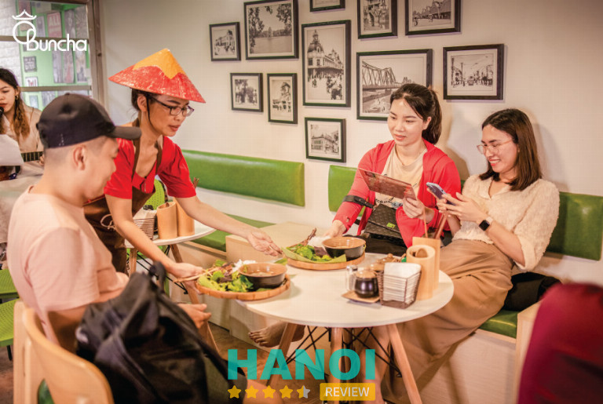
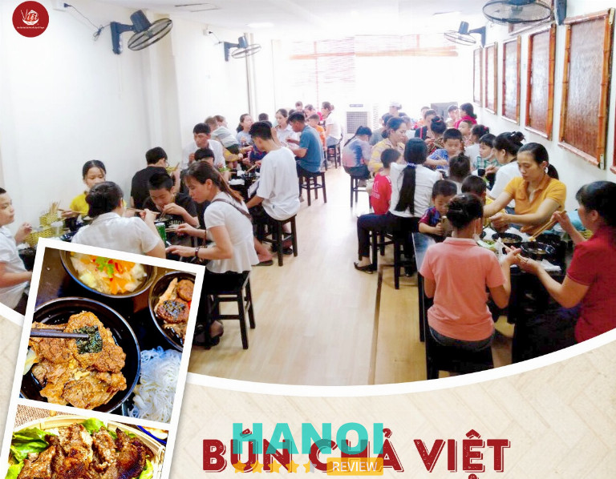
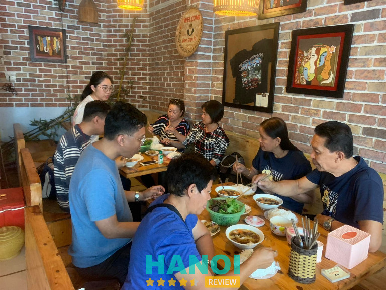
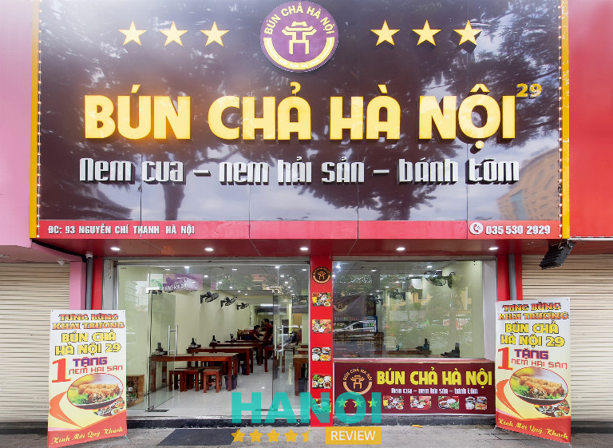
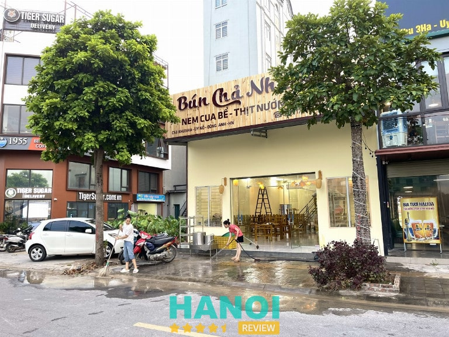
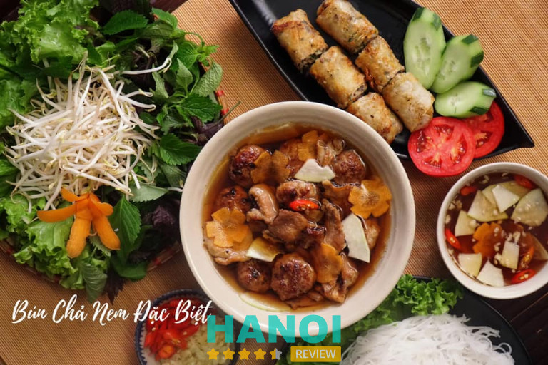
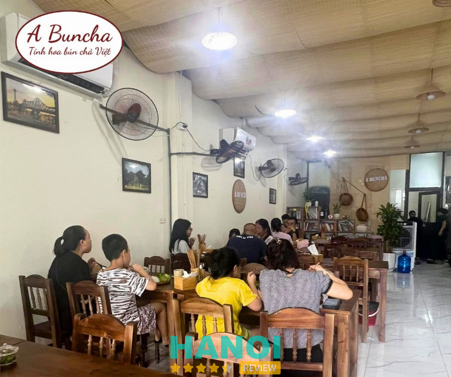

10 Quán bún chả ngon ở Hà Nội nổi tiếng đông khách nhất
Nhiều quán bún chả ngon ở Hà Nội đến nay đã trở thành những điểm đến ẩm thực không thể thiếu đối với người dân nơi đây và cả những du khách nước ngoài. Bún chả từ lâu đã được biết đến như một món đặc sản, mang hương vị độc đáo, khiến thực khách say đắm chỉ trong lần đầu thưởng thức.
Top 10 Quán bún chả ngon ở Hà Nội ngon chuẩn vị
Những quán bún chả đã trở thành một phần không thể thiếu trong đời sống ẩm thực của người Hà Nội và đến nay đã trở thành biểu tượng ẩm thực đáng tự hào của Việt Nam. Những quán bún chả tuy giản dị nhưng lại chứa đựng giá trị văn hóa to lớn, được nhiều thế hệ biết đến và gìn giữ món ăn này cho đến ngày nay.
Và để giúp mọi người biết về những quán bún chả ngon ở Hà Nội ngon chuẩn vị, HaNoiReview đã tổng hợp thông tin cụ thể dưới bài viết sau đây.
Bún Chả Hương Liên
Nằm trên con đường Lê Văn Hưu, Bún Chả Hương Liên đến nay đã được nhiều người biết đến, thu hút cả những du khách từ khắp mọi nơi trên thế giới đến thưởng thức. Tại đây từng ghi dấu ấn đặc biệt khi từng đón tiếp cựu tổng thống Mỹ Barack Obama trong chuyến thăm Việt Nam vào năm 2016.
Sự kiện này đã làm cho quán trở thành một điểm đến nổi tiếng, giúp nhiều thực khách trải nghiệm ẩm thực truyền thống khi đặt chân đến Hà Nội.

Đặc biệt nhất vẫn phải kể đến món bún chả tại đây luôn được đánh giá cao khi miếng chả được nướng chín vừa phải, thịt mềm nhưng vẫn giữ được độ ngọt tự nhiên. Chả ở đây nổi tiếng là được chế biến từ nguyên liệu tươi ngon nhất và quan trọng hơn là quá trình tẩm ướp mang hương vị đặc trưng riêng biệt.
Khi ăn thực khách sẽ cảm nhận được sự kết hợp hoàn hảo giữa hương vị thơm lừng giữa thịt nướng và sự hòa quyện của các loại gia vị đã được chế biến. Không chỉ vậy nước chấm cũng là một phần không thể thiếu và là yếu tố quan trọng để làm nên tên tuổi của quán.
Với hơn 20 năm kinh doanh, Bún Chả Hương Liên luôn giữ vững được chất lượng món ăn từ những ngày đầu tiên cho đến nay. Bí quyết nằm ở sự tận tâm của người chủ quán trong việc lựa chọn nguyên liệu và giữ được công thức chế biến truyền thông.
Thông tin liên hệ:
- Địa chỉ: 24 Lê Văn Hưu, Q. Hai Bà Trưng, Hà Nội
- Điện thoại: 024 3943 4106
- Fanpage: FB.com/bunchahuonglienobama
Xem thêm thông tin về: 10 Quán lươn ngon tại Hà Nội chuẩn vị, không thể bỏ qua
Bún chả Sinh Từ
Bún chả Sinh Từ là cái tên đã trở thành biểu tượng của ẩm thực Hà Nội, đặc biệt là đối với những tin đồ của món ăn dân dã này. Ra đời đã lâu, quán bún chả này đã trải qua những thăng trầm của thời gian mà vẫn giữ được vị thế của mình trên thị trường.
Sự khác biệt của Bún chả Sinh Từ so với những món ăn khác chính là việc lựa chọn nguyên liệu tươi ngon nhất, được lựa chọn kỹ càng và phương pháp chế biến mang đậm dấu ấn gia truyền.

Đối với nguyên liệu thịt, chủ quán Bún chả Sinh Từ luôn ưu tiên lựa chọn những miếng thịt ba chỉ tươi ngon nhất, với tỷ lệ nạc mỡ hài hòa. Thịt được thái đều tay, vừa miếng, đảm bảo khi nướng chín vẫn giữ được độ mềm ngọt tự nhiên.
Loại gia vị ướp thịt còn được pha chế một cách tỉ mỉ, hài hòa giữa các nguyên liệu, tạo nên hương vị thơm ngon đặc trưng. Khi thưởng thức một tô bún chả tại Bún chả Sinh Từ thực khách sẽ cảm nhận được sự hòa quyện tinh tế giữa vị ngọt của thịt, vị chua ngọt của nước chấm và vị thanh mát của rau sống.
Những miếng chả này đều được nướng vàng đều, thơm lừng, ăn kèm với bún và rau sống chấm vào bát nước chấm đậm đà. Với quy mô nhiều chi nhánh ở các quận huyện tại Hà Nội, Bún chả Sinh Từ luôn đầu tư không gian rộng rãi, nhân viên phục vụ nhiệt tình, mang đến trải nghiệm toàn diện cho mọi người thưởng thức.
Thông tin liên hệ:
- Địa chỉ: 62 Vũ Phạm Hàm, Q. Cầu Giấy, Hà Nội
- Điện thoại: 1900 2866
- Email: cskh@bunchasinhtu.com
- Website: bunchasinhtu.vn
- Fanpage: FB.com/bunchasinhtu.vn
Bún Chả 199X
Hoạt động với nhiều hệ thống tại Hà Nội, Bún Chả 199X hiện tại đã được nhiều người biết đến là một trong những quán bún chả thơm ngon, hấp dẫn. Nổi bật với sự đầu tư không gian ăn uống, tại đây đã mang đậm dấu ấn riêng, gây ấn tượng đến khách hàng.
Tại đây từ cách bài trí đến hương vị món ăn đều được đầu tư, chăm chút tỉ mỉ. Điểm nhấn đặc biệt của quán là hương vị bún chả đậm đà được làm từ những nguyên liệu ngon nhất.

Món chả của Bún Chả 199X được chia làm hai loại chính là chả miếng và chả viên. Chả miếng được làm từ những lát thịt ba chỉ, ướp cùng hành, tỏi, nước mắm và mật ong, sau đó nướng lên cho đến khi càng ruộm.
Chả viên lại là sự kết hợp giữa thịt nạc vai và mỡ, được băm nhuyễn, nặn thành từng viên nhỏ, nướng chín tới. Hương vị thơm ngon của chả kết hợp cùng nước mắm chua ngọt, được pha chế theo công thức gia truyền, tạo nên tổng thể hài hòa, hấp dẫn.
Tất cả nguyên liệu do Bún Chả 199X chế biến đều đảm bảo an toàn vệ sinh thực phẩm. Quán cũng nhận ship đến tận nơi, phục vụ cho khách hàng có nhu cầu thưởng thức bún chả tại văn phòng, trường học, hay tại nhà.
Thông tin liên hệ:
- Địa chỉ: BT5-VT14 khu đô thị Xa La, Phúc La, Hà Đông, Hà Nội
- Điện thoại: 091 434 22 55
- Fanpage: FB.com/Buncha199Xpage
Xem thêm thông tin về: 10 Quán cơm văn phòng ở Hà Nội ngon, không gian đẹp
Ô Bun Cha
Nằm giữa lòng Hà Nội, Ô Bun Cha không chỉ thu hút khách hàng bởi chất lượng món ăn mà còn bởi không gian mang đậm nét xưa cũ, lan tỏa sự thư thái và bình yên cho những ai mong muốn thưởng thức món bún chả hấp dẫn.
Điểm đặc biệt ở Ô Bun Cha chính là những món chả đều được nướng trên bếp than hoa theo phương pháp truyền thống, sử dụng quạt tay để điều chỉnh lửa, giữ cho thịt luôn chín đều, thơm lừng mà không hề bị cháy.

Thịt nướng tại Ô Bun Cha đều có vị ngọt tự nhiên, hòa quyện với hương thơm của các loại gia vị, tạo nên hương vị đặc trưng khó quên như món bún chả. Bên cạnh đó, việc thưởng thức với nước chấm được pha chế hài hòa sẽ tạo nên sự cân bằng tuyệt vời cho mọi người thưởng thức.
Khi ăn chỉ cần gắp một miếng bún, chấm vào bát nước chấm đậm đà, thêm miếng thịt nướng thơm phức tất cả hương vị đó như hòa quyện trong miệng, mang đến một cảm giác ngon miệng khó tả.
Không gian tại Ô Bun Cha tuy nhỏ nhưng luôn có được sự thông thoáng, đông đúc, thể hiện sự yêu thích và tin tưởng của thực khách đối với chất lượng món ăn. Nhân viên tại đây luôn sẵn sàng lắng nghe và đáp ứng mọi yêu cầu của khách hàng, mang đến sự hài lòng từ những điều nhỏ nhất.
Thông tin liên hệ:
- Địa chỉ: 18 Cốm Vòng, Dịch Vọng Hậu, Q. Cầu Giấy, Hà Nội
- Điện thoại: 094 206 99 98
- Email: obuncha2312@gmail.com
- Website: obuncha.vn
- Fanpage: FB.com/bunchahanoi1983
Bún Chả Việt
Hấp dẫn thực khách với các món bún chả độc đáo, Bún Chả Việt đến nay đã nằm trong danh sách những cơ sở kinh doanh ẩm thực hấp dẫn tại Hà Nội. Điển hình là món bún chả cuốn mỡ chài – một sáng tạo mới lạ và độc đáo, lần đầu tiên xuất hiện tại Việt Nam.
Món bún chả mỡ chài được chế biến với viên chả băm và phên chả được cuốn trong lớp mỡ, một lớp mỡ mỏng giúp miếng thịt trở nên mọng nước, mềm mại, giữ được hương vị đậm đà.

Khi cắn vào, thực khách sẽ cảm nhận được sự béo ngậy nhưng không hề gây ngấy, thay vào đó là cảm giác thanh thoát, thơm ngon khó cưỡng. Đây chắc chắn là trải nghiệm ẩm thực không thể bỏ qua đối với những ai yêu thích món bún chả.
Món ăn còn được đầu bếp có kinh nghiệm sử dụng nguyên liệu tươi ngon chế biến và luôn đảm bảo nghiêm ngặt các tiêu chuẩn an toàn vệ sinh. Bên cạnh đó, quán cũng thường xuyên có các chương trình khuyến mãi hấp dẫn như miễn phí trà đá, bún, hay tặng Pepsi với giá chỉ 1K, giúp mọi người có thể thưởng thức bữa ăn trọn vẹn nhất.
Ngoài chất lượng món ăn, Bún Chả Việt còn hỗ trợ dịch vụ giao hàng nhanh chóng và tiện lợi. Quán còn hỗ trợ giao hàng miễn phí trong bán kính 1km và còn có nhiều ưu đãi đặc biệt khi đặt từ 5 suất trở lên, điều này giúp khách hàng dễ dàng thưởng thức món bún chả yêu thích mà không cần phải đến trực tiếp quán.
Thông tin liên hệ:
- Địa chỉ: 2 Cầu Giấy, P. Ngọc Khánh,Q. Ba Đình, Hà Nội
- Điện thoại: 058 999 9955
- Fanpage: FB.com/bunchaviet/
Xem thêm thông tin về: 10 Quán mì ramen ngon nổi tiếng tại Hà Nội đừng bỏ lỡ
BunChata
Khi nhắc đến những nơi bán bún chả tại Hà Nội, không thể không nhắc đến BunChata. Tại đây được đánh giá là nơi vô cùng nổi tiếng năm ngay trong khu phố cổ.
BunChata ban đầu năm trên phố Gia Ngư, quận Hoàn Kiếm – một con phố nhỏ trong khu phố cổ Hà Nội. Sau đó, quán đã chuyển đến 21 phố Nguyễn Hữu Huân, cũng thuộc khu phố cổ, nơi mà đến nay vẫn thu hút rất nhiều thực khách trong và ngoài nước.

Bún chả chả từ lâu đã trở thành biểu tượng ẩm thực của miền Bắc Việt Nam và BunChata là một trong những quán ăn nổi tiếng nhất, mang lại hương vị truyền thống đậm đà cho món ăn này.
Khi bước vào quán, thực khách sẽ ngay lập tức cảm nhận được sự thoải mái và gần gũi, một cảm giác rất đặc trưng của những quán ăn cổ kính giữa lòng Hà Nội. Nhân viên ở đây luôn nồng hậu, sẵn sàng hướng dẫn khách hàng cách thưởng thức bún chả đúng cách, đặc biệt là đối với những thực khách nước ngoài.
Tại quá luôn được đánh giá cao khi món bún chả được chế biến công phu với những miếng thịt lớn nướng thơm lừng, được ướp gia vị đậm đà và nướng đến khi đạt độ mềm, vừa có lớp vỏ ngoài cháy xém. Thịt nướng được ăn kèm với bún tươi, rau sống và nước chấm pha chế khéo léo từ nước mắm, giấm, đường, ớt, tạo nên một sự kết hợp hoàn hảo giữa các hương vị mặn, ngọt, chua, cay.
Một điểm cần phải kể đến chính là mặc dù quán luôn đông khách, những món ăn luôn được mang ra nhanh chóng, đảm bảo thực khách không phải chờ lâu. Nơi đây chính là điểm đến yêu thích của nhiều người khi muốn thưởng thức món bún chả đậm đà nhất.
Thông tin liên hệ:
- Địa chỉ: 21 Nguyễn Hữu Huân, Lý Thái Tổ, Q. Hoàn Kiếm Hà Nội
- Điện thoại: 0966 848 389
- Email: bunchata21@gmail.com
- Website: bunchata.com
- Fanpage: FB.com/Bunchatahanoi/
Bún Chả Hà Nội
Phát triển với chuỗi hệ thống khắp các quận huyện Hà Nội, thương hiệu Bún Chả Hà Nội đến nay đã rất nổi tiếng với hương vị truyền thống của đất Kinh Kỳ. Món bún chả tại đây đặc biệt với cách chế biến tinh tế, giữ trọn vẹn hương vị đặc sắc, đậm đà mà thực khách khó lòng cưỡng lại.
Khi đến với Bún Chả Hà Nội, mọi người sẽ được trải nghiệm món bún chả trứ danh, với những miếng chả nướng thơm lừng, béo ngậy, được nướng than hoa và quạt đều tay, chính vì điều này đã tạo nên hương vị đặc trưng khó tả.

Để tăng thêm sự hấp dẫn cho món ăn, tại đây còn phục vụ thêm nhiều món ăn kèm độc đáo như bánh cuốn chả, bánh tôm và nem hải sản. Đặc biệt, nem hải sản của quán được thực khách yêu thích bởi được chế biến rất kỹ lưỡng, kết hợp tinh tế giữa nhiều nguyên liệu tươi ngon.
Cùng không gian được đầu tư rộng rãi, nhân viên phục vụ chuyên nghiệp, tận tình, Bún Chả Hà Nội đã trở thành điểm đến thường xuyên của nhiều người dân và cả những khách nước ngoài. Nếu mọi người không có thời gian ra ngoài còn có thể đặc món qua các ứng dụng hoặc gọi trực tiếp đến Bún Chả Hà Nội để được giao hàng tận nơi.
Thông tin liên hệ:
- Địa chỉ: 93 Nguyễn Chí Thanh, Q. Ba Đình, Hà Nội
- Điện thoại: 035 530 2929
- Fanpage: FB.com/61561719156735
Xem thêm thông tin về: 10 Quán ăn chay tại Hà Nội ngon nổi tiếng, đa dạng món
Bún chả Nhà Tọt
Phát triển với 3 cơ sở tại Hà Nội, Bún chả Nhà Tọt chắc chắn sẽ là điểm đến ẩm thực không thể bỏ qua đối với những người yêu thích món bún chả. Với không gian sạch sẽ, thoáng mát, đây không chỉ là nơi để thưởng thức món ăn mà còn là nơi lý tưởng để check-in, chia sẻ khoảnh khắc với bạn bè và gia đình.
Bún chả Nhà Tọt nổi bật với hương vị đặc trưng cuốn hút, một phần ăn bao gồm bún trắng tinh, dai ngon, kết hợp với rau sống tươi xanh. Đặc biệt các miếng chả viên ăn kèm đều được làm từ thịt nạc vai xay nhuyễn, trộn đều với gia vị, sau đó nướng trên thang hoa thơm phức.

Ngoài chả viên, thực khách có thể thưởng thức thơm chả ba chỉ nướng vàng ươm, béo ngậy với lớp mỡ được xen kẽ, đều đặn, tạo nên hương vị khó cưỡng. Bên cạnh đó quán cũng có các loại chả mỡ chài cuốn và chả xương sông.
Chả mỡ chài được cuốn khéo léo, bên ngoài vàng giòn, bên trong giữ được độ ngọt tự nhiên của thịt. Chả xương sông với hương vị truyền thống, đậm đà và thơm ngọt, cũng là một trong những món được nhiều khách hàng yêu thích.
Quán còn có dịch vụ giao hàng nhanh chóng, tiện lợi trong bán kính 2km quanh thị trấn Đông Anh. Nếu ở xa hơn mọi người chỉ cần trả thêm một khoản phụ phí nhỏ từ 10 – 15 nghìn để có thể thưởng thức món ăn ngay tại nhà mà không cần phải đến quán.
Ngoài ra Bún chả Nhà Tọt còn có bãi đỗ xe ô tô rộng rãi, thuận tiện cho nhiều khách hàng đến thưởng thức mà không cần phải lo lắng về việc tìm chỗ đỗ xe. Với chất lượng món ăn tuyệt vời và dịch vụ chu đáo, quán chắc chắn sẽ để lại trong lòng thực khách những ấn tượng khó phai.
Thông tin liên hệ:
- Địa chỉ: Khu 3 HA, Uy Nỗ, H. Đông Anh, Hà Nội
- Điện thoại: 096 395 68 58
- Fanpage: FB.com/61561161878233
Bún Chả Vị Xưa
Bún Chả Vị Xưa còn được biết đến với cái tên Bún Chả Hàng Than qua thời gian dài hoạt động đã đưa món ăn này đến gần hơn với nhiều thực khách trong và ngoài nước.
Thực đơn tại Bún Chả Vị Xưa rất phong phú từ bún chả truyền thống, bún chả than, bún chả trộn đến bún mọc sườn chua, bánh cuốn chả và các món ăn khác như cá nục rim,… Đồ ăn tại đây đều được chế biến mới mỗi ngày, mang đến trải nghiệm tốt nhất và đảm bảo an toàn tuyệt đối.

Nhan viên tại quán luôn nhiệt tình thân thiện, tạo cảm giác thoải mái cho thực khách thưởng thức. Ngoài ra, quán cũng cung cấp dịch vị giao hàng nhanh chóng chỉ trong 20 phút, phục vụ chu đáo cho nhiều khách hàng bận rộn không đến được quán.
Đặc trưng của quán còn nằm ở chỗ hoạt động rất lâu năm trên thị trường, được rất nhiều khách hàng biết đến. Hiện tại, Bún Chả Vị Xưa đã nâng cấp, đổi mới cơ sở để mang lại trải nghiệm ẩm thực tốt hơn cho khách hàng.
Thông tin liên hệ:
- Địa chỉ: nhà 34 dãy A12, Geleximco Khu A, đường Lê Trọng Tấn, An Khánh, Hà Đông, Hà Nội
- Điện thoại: 078 822 8686
- Email: bunchavixua@gmail.com
- Website: bunchahangthan.vn
- Fanpage: FB.com/bunchavixua
Xem thêm thông tin về: 10 Quán cơm gia đình tại Hà Nội ngon, không gian ấm cúng
A Bún Chả Hà Nội
Mỗi bát bún chả tại A Bún Chả Hà Nội đều được chuẩn bị kỹ lưỡng từ khâu lựa chọn nguyên liệu chế biến. Trong đó có thịt nướng – linh hồn của món bún chả được lựa chọn từ những miếng thịt tươi ngon nhất, sau đó tẩm ướp gia vị theo công thức gia truyền, rồi nướng trên than hoa để tạo ra những miếng chả thơm lừng, vàng ruộm.
Sự hoàn hảo trong từng miếng chả chính là sự kết hợp giữa hương vị đậm đà của gia vị, hương thơm tự nhiên của than hoa và độ mềm mọng của thịt luôn tạo nên hương vị gây nghiện khó cưỡng.

Không chỉ có thịt nướng, A Bún Chả Hà Nội còn chú trọng đến từng chi tiết nhỏ như bát nước chấm. Ngoài ra nước chấm tại quán được pha chế theo công thức riêng, cân bằng giữa vị chua ngọt, chút cay nồng của ớt, tạo nên hương vị chuẩn vị.
Để tăng thêm sự tươi mát cho món ăn, mỗi bát bún chả đều được kèm theo rau sống tươi xanh và chút đu đủ, cà rốt ngâm giòn tan. Tất cả hòa quyện tạo nên một bản hòa ca hương vị đầy hấp dẫn.
Vào các khung giờ vàng từ 6h – 10h sáng và từ 18h – 21h tối, khi thưởng thức một bát bún chả thơm ngon tại quán, mọi người sẽ được tặng kèm một cốc trà râu ngô mát lạnh, giúp xua tan cái nóng mùa hè và làm bữa ăn thêm phần trọn vẹn.
Ngoài bún chả truyền thống, quán còn phục vụ những món ăn đặc sắc món ăn đặc sắc như nem truyền thống và nem cua bể. Nem truyền thống với vỏ tròn rụm, nhân thịt đậm đà, khi chấm cùng nước chấm của quán.
Thông tin liên hệ:
- Địa chỉ: TT 06-39 Khu Đấu giá Tứ Hiệp, Vũ Lăng, H. Thanh Trì, Hà Nội
- Điện thoại: 098 961 45 15
- Email: thangngubinh@gmail.com
- Fanpage: FB.com/61559746781848
4 Kinh nghiệm chọn Quán bún chả ngon ở Hà Nội
Bún chả từ lâu luôn là món ăn đặc trưng, nổi tiếng với hương vị đậm đà và cách chế biến độc đáo. Mỗi quán bún đều có những bí quyết và công thức riêng, chính vì lý do đó mọi người cần xem các kinh nghiệm sau đây:
Quan sát không gian quán: Một quản bún chả ngon thường có không gian sạch sẽ, thoáng mát và bày trí gọn gàng. Bàn ghế được sắp xếp hợp lý, tạo cảm giác thoải mái cho thực khách.
Đọc đánh giá trên mạng: Trước khi đến một quán ăn nào đó, hãy tham khảo các đánh giá trên mạng để có cái nhìn khách quan hơn. Cùng với đó mọi người còn có thể hỏi ý kiến của những người dân gần đó để tìm được một địa chỉ bán bún ngon nhất.
Thử nhiều loại chả: Bún chả thường có nhiều loại chả như chả miếng, chả băm, chả lá lốt,… hãy thử nhiều loại khác nhau để tìm ra loại chả mà mình yêu thích nhất và ăn kèm với bún.
Giá cả: Giá cả chính là một yếu tố cần cân nhắc, bạn có thể tham khảo trước menu hoặc liên hệ để được tư vấn. Bên cạnh đó hãy theo dõi các khung giờ ưu đãi để tiết kiệm giá cả và chi phí.
Bằng những thông tin được đề cập trong bài viết, mọi người có thể chọn được Quán bún chả ngon ở Hà Nội ngon nhất. Bên cạnh đó, mọi người còn có thể đến trực tiếp để trải nghiệm để chọn được nơi phù hợp nhất hương vị của mình.
Có thể bạn quan tâm
- 5 Nhà hàng tiệc cưới cao cấp tại Hà Nội sang trọng, đẳng cấp nhất
- 10 Nhà hàng Nhật Bản tại Hà Nội ngon đáng trải nghiệm nhất
- 10 Nhà hàng ẩm thực Việt tại Hà Nội ngon đậm vị truyền thống
- 10 Nhà hàng Dimsum tại Hà Nội ngon đậm đà hương vị Trung Hoa
DOANH NGHIỆP: Đăng tải thông tin MIỄN PHÍ.
Tin đọc nhiều


10 Quán phở gà Phố Cổ lâu đời, nhất định phải thử khi đến đây
Phở gà Hà Nội, một trong những đặc sản nổi tiếng của ẩm thực Việt Nam, với sự kết hợp hoàn hảo giữa gà tươi...

15 Quán Cafe Phố Cổ nhất định phải thử khi đến Hà Nội
Khi đến Hà Nội, ngoài việc khám phá những di tích lịch sử, không thể bỏ qua trải nghiệm ngồi tại những quán cafe Phố...

5 Quán cơm văn phòng tại Q. Tây Hồ không thể bỏ qua
Sau những giờ làm việc căng thẳng, việc thưởng thức một bữa cơm ngon là cách hiệu quả để tái tạo năng lượng. Các quán...

10 Quán bún đậu mắm tôm Phố Cổ Hà Nội ngon nổi tiếng, lâu đời
Thật là một thiếu sót nếu bạn chưa từng thưởng thức bún đậu mắm tôm – món ăn đặc trưng của Hà Nội. Để cảm...

Trở thành người đầu tiên bình luận cho bài viết này!